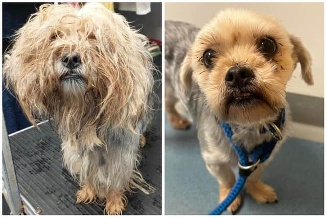

Max's Journey

Max's journey is one of incredible resilience and hope. He was found abandoned on the streets, alone and malnourished. When Claws and Paws first found him, he was weak and barely able to stand, with his ribs clearly visible. It was clear that Max had been through a lot, but his eyes still carried a glimmer of hope. He was immediately rushed to a veterinary clinic, where he received much-needed medical attention. The vet confirmed that Max had suffered from both physical and emotional trauma, and it would take time for him to recover fully.
Max was placed in a foster home where he could recover in a calm and safe environment. His foster family was experienced with dogs who had faced hardship, and they immediately started working with Max to help him feel secure again. At first, Max was very shy and wary of humans. He would cower in the corner, avoiding any interaction. His foster parents didn’t push him—they allowed him to take his time and slowly built trust with him. They provided him with a warm, cozy bed, nourishing food, and lots of love.
Over time, Max began to trust his foster parents. They would gently approach him, speaking softly and offering treats. Slowly but surely, Max started to show signs of progress. He began to wag his tail when his foster parents entered the room, and he even started to approach them for pets. His recovery wasn’t instant, but each day brought new improvements, and Max’s true personality began to shine through.
One of the most significant moments in Max’s journey came when he met another dog in the foster home. At first, he was a little hesitant, but with patience, the two dogs began to bond. They played together in the yard, and for the first time, Max seemed truly happy. His foster family could see that Max had the potential to become the loving, playful companion he was meant to be.
After several months, Max was ready to find his forever home. He was adopted by a wonderful family who had been looking for a gentle and loving dog. They had experience with rescue dogs and understood that Max needed time and space to adjust to his new life. With his new family’s love and patience, Max continued to thrive. Today, he enjoys long walks, playing in the yard, and cuddling with his family. Max’s story is a reminder that no matter how broken an animal may seem, with the right care and love, they can heal and become the loyal companion they were always meant to be.
Back to Success Stories